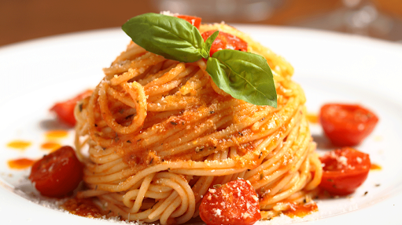
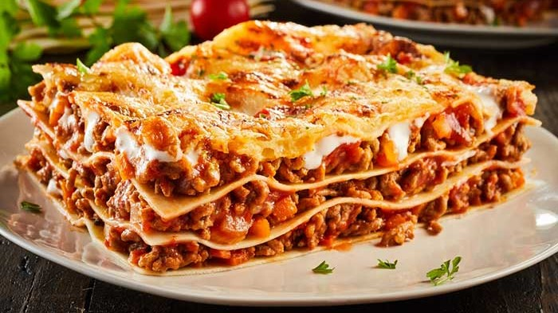
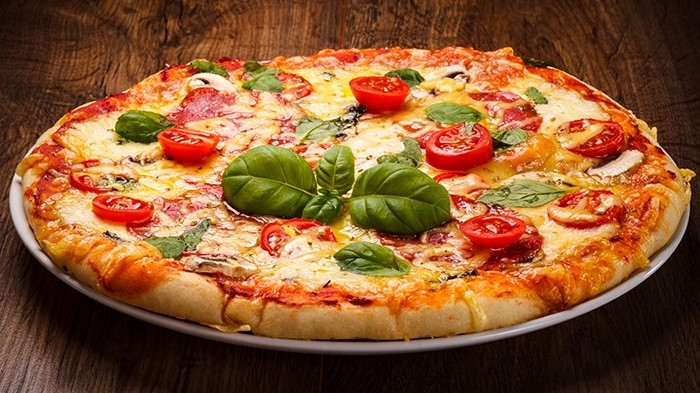
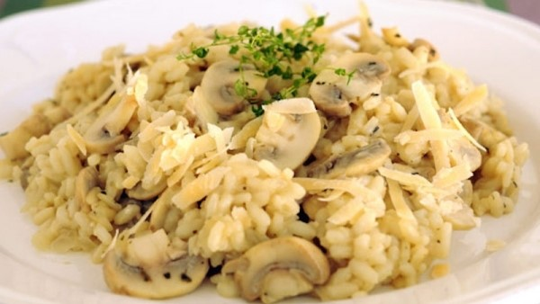
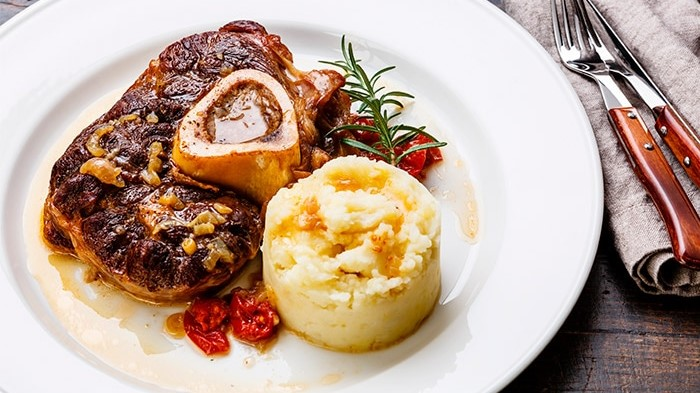
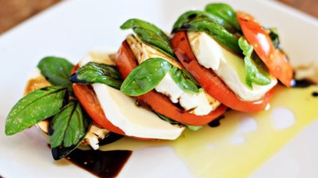
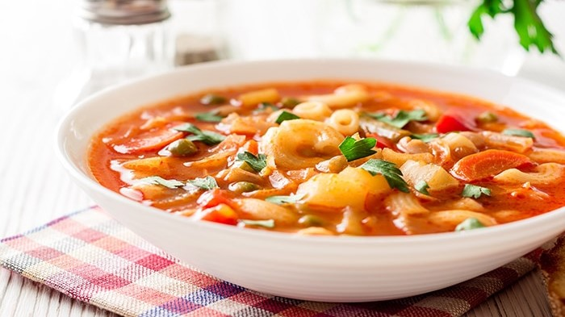
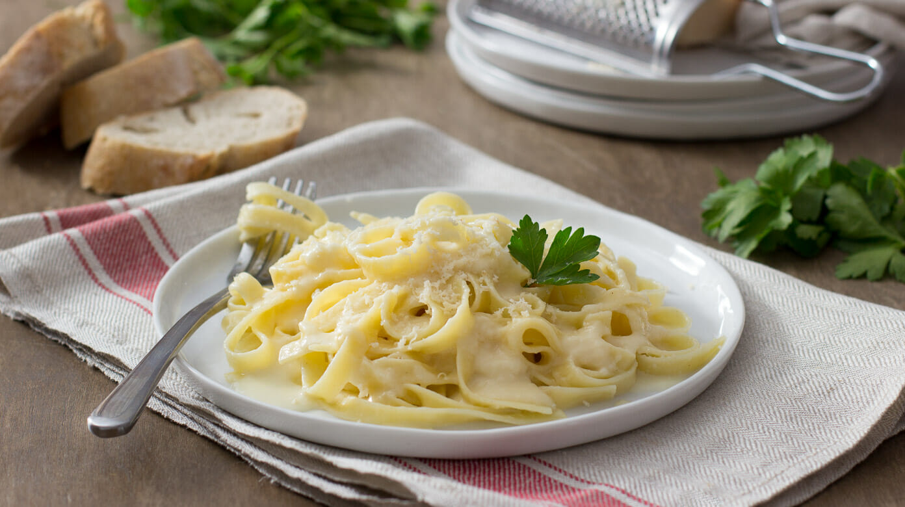

Spaghetti a la boloñesa
Pasta con salsa de tomate condimentada,cebolla
y zanahoria picada,
carne de magro de cerdo y babilla de ternera marinada con vino blanco.

Lasagna
Pasta que se sirve en láminas, ha de llevar como mínimo cuatro capas de pasta,
intercalada por lo general con queso manchego y carne molida de res

Pizza
Masa de pan cubierta por una capa de salsa de tomate condimentada, una capa de
queso mozarela,
una capa de un ingrediente
a elegir (peperoni, salami, jamón, piña , champiñones, etc) y una pizca
orégano o ajo.

Risotto
Arroz cocinado con caldo, mantequilla,
cebolla,un toque de vino blanco y queso,
con una textura cremosa.

Ossobuco
Guiso preparado con jarrete de ternera, corte transversal del corvejón de la res,
en rodajas de gran grosor (de al menos 3 cm) y
sin deshuesar frita . A menudo se
sirve
acompañado de risotto.

Ensalada Capresse
Compuesta de rodajas de tomate y de mozzarella fresca, y hojas de albahaca fresca,
de la variedad "hoja grande" y "superhoja",
regado con aceite de oliva.

Sopa Minestrone
Sopa elaborada con verduras de la época del año, como la tradicional sopa de
verduras
española. A menudo se le añade algo de pasta
o arroz. Los ingredientes
más comunes son judías, cebollas, apio, zanahorias y tomates.

Fettuccini Alfredo
Pasta fetuccinne cocinada con salsa Alfredo
hecha a base de mantequilla, crema y cebolla.